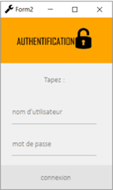

Attention! sur cette page nous allons présenter notre projet d'un point de vue plus technique.
No panic, les explications sont claires.
CONTEXTE
Nous développons un système pour accompagner les plus petits dans leur apprentissage du tri.
Notre monde est dépassé par l’abondance des déchets. Le Monde parle d’un 7ème continent de déchets, les pics de pollution sont de plus en plus fréquents, et il est donc nécessaire d’inciter les jeunes générations à mieux respecter l’environnement. Cette prise de conscience doit se faire le plus tôt possible afin d’amplifier son efficacité car nous savons que nos futurs utilisateurs sont dans une classe d’âge qui favorise leur apprentissage car ils sont en plein développement intellectuel et social entre 6 et 10 ans.
TRAVAUX PRECEDENTS
Lors du premier semestre, nous avons réalisé l’analyse fonctionnelle du système. Cela va de la définition du besoin a l’analyse du milieu extérieur. Pour cela nous avons dans un premier temps réalisé un diagramme bête à corne. Celui-ci permet de répondre à trois questions : à qui il s’adresse, sur quoi on agit et quel est l’objectif. À la suite de ça, nous avons réalisé une analyse du milieu extérieur, faisant apparaitre les différentes phases de vie du système, cela permet de notifier les fonctions principales du système ainsi que les contraintes. Lors de ce semestre nous avons également définie certain element basiques du système, comme le type de déchet qui accueil. Nous avons choisi les 4 types de déchets les plus commun : verre, papier/plastique/métal, organique et les déchets ménager.
Nous avons ensuite établi le fonctionnement général du système, c’est-à-dire comment se passe une interaction entre l’utilisateur et Triosaure.
Concernant l’aspect économique du système, n’analyse des couts a été faite, celle-ci a permis de mettre en évidence certaine fonctions (issues de l’analyse du milieu extérieur) ayant un cout trop élevé vis-à-vis de leur importance. Un bilan économique concernant les actionneurs et les capteurs du système a aussi été réalisée pour nous permettre d’évaluer le budget nécessaire a la réalisation du projet.
Ensuite, nous avons divisé notre système en différents sous-systèmes comme l'interaction ou les trappes. Pour chaque sous-système, nous avons comparé différentes solutions, puis nous les avons regroupées dans des diagrammes comme le diagramme organique ou l'architecture électronique. Nous avons également pu réaliser nos idées pour l'apparence du système, grâce à la CAO.
DIAGRAMME BETE A CORNES
COMPARTIMENTS DE TRI
NOTRE SYSTEME
En pratique, il s’agit d’une poubelle qui comporte 4 conteneurs et des couvercles qui coulissent pour ouvrir et fermer chaque compartiment. Pour ouvrir le couvercle, l'utilisateur doit sélectionner le type de déchets sur l'écran, puis toucher le bouton du bon compartiment. Si cela est fait correctement, le couvercle du bac coulissera sur le côté, laissant le bac ouvert.
Si le système se retrouve plein, un technicien arrive pour la vider. Pour cela, il a accès aux bacs via la porte bleue qui peut s’abaissée pour permettre de retirer les bacs par le côté.
VUE 3D
DEVELOPPEMENT DE L'APPLICATION
Nous avons travaillé sur la manière dont allé se passer l’interaction entre l’utilisateur et notre système. Pour cela, nous avons développé une application utilisant le langage C-sharp.
Dans un premier temps nous avons réalisé une maquette de ce à quoi ressemblera notre interface.
Sur la première page, vous pouvez voir une zone de saisie et différents boutons qui vous permettent de sélectionner le type de déchets mais aussi d'accéder à une page d'authentification. Sur cette page, il est possible de se connecter pour accéder aux paramètres du système ou de revenir au menu.
Une fois cette partie faite, nous avons voulu donner une apparence plus agréable à notre interface. Sur cette page, vous pouvez voir un rendu plus avancé de l'application, avec l'apparence des différentes pages.
Enfin, nous avons commencé à travailler sur un jeu qui serait disponible sur l’interface pour permettre aux enfants d’apprendre en s’amusant. Vous pouvez ainsi voir un premier visuel du jeu dans lequel des déchets tombe, l’enfant doit alors les attraper et les placer dans le compartiment correspondant. Si c’est le cas, l’enfant marque un point, le but étant d’avoir le plus de point possible.
PAGE ACCUEIL

IDENTIFIACTION
MENU ADMINISTRATEUR
JEUX
DEVELOPPEMENT DU SITE INTERNET
En plus de l'application, nous commençons à développer un site web pour présenter le projet. Ce site aura plusieurs sections : une page d'accueil, une page sur l'avancement du projet, une page pour nous présenter et une page qui permet d'avoir l'état de remplissage des systèmes. Les pages sont codées en html, css, java et php. Sur la page d'accueil, il y aura une description du projet, à quoi il servira, puis des images pour l'illustrer et enfin une carte interactive où l'on pourra voir où se trouvent les systèmes. La page qui parle de l'avancement du projet sera un résumé du travail effectué pour le projet. Il sera de nature générale afin de ne pas alourdir la page, mais il sera suffisamment détaillé pour comprendre les différents aspects du projet. La page indiquant l'état des systèmes nous montrera le niveau de remplissage des bacs, mais aussi les erreurs éventuelles.
Enfin, la dernière page montre les différents membres du groupe avec leur participation au projet. Sur cette page, chaque membre figure sur une carte. Lorsque vous passez la souris sur la carte, elle s'agrandit, ce qui vous permet de lire ce qui est marqué dessus.
ELECTRONIQUE
Le système dispose pour chaque type de déchets d’un bac et une trappe qui s'ouvre lorsque l'utilisateur le demande. Notre projet aura des moteurs à courant continu chargés de faire glisser les trappes. Le système a 4 trappes, nous aurons donc besoin de 4 moteurs à courant continu qui transmettront leur force grâce à une crémaillère qui se trouve sous chaque bac. Une fois que l'utilisateur a terminé, les trappes doivent revenir à leur position initiale.
CABLAGE MOTEUR
CABLAGE CAPTEUR DISTANCE
CABLAGE CAPTEUR FORCE
CONCEPTION ASSITEE PAR ORDINATEUR
L'année dernière, nous en avons réalisé une CAO un avec des formes de base. Cela ayant pour but de montrer l’allure générale du système. Cette année nous avons fait une CAO avec des formes complexes dans le but de lui donner une esthétique plus agréable et attrayante pour les utilisateurs. Xuban a choisi de réaliser un distributeur de gel hydroalcoolique, avec l’apparence d’un canard, prenant la forme d'un Pokémon. Finalement, Lyderic et moi avons eu la même idée : illustrer chaque compartiment avec des maquettes.
Nous avons comparé nos différentes créations pour juger si l'une d'entre elles pouvait être combinée dans notre système. Finalement, Arnaud a réalisé une CAO ayant pour forme une pokeball, englobant notre système, cela est malheureusement difficilement réalisable car l’accès au système serait bloqué. Nous avons comparé nos CAO sur la qualité de leur production et leur utilité pour notre système.
Le fait de modéliser notre système est important dans la phase de conception, cela nous permet d’avoir un regard global sur ce que nous sommes en train de faire. De voir si nos choix techniques sont applicables à l’allure que nous voudrions donner à notre système. De plus, cela permet aussi de pouvoir faire un sondage auprès des utilisateurs pour savoir si le produit leur plait. Cela est important car un enfant peut juger rapidement si quelque chose lui plait ou non. Si le système de l’attrait pas, il ne viendra pas l’utiliser. Au contraire si le systeme lui plait, il viendra l’utiliser plus régulièrement et donc aura un meilleur apprentissage.
ANALYSE MECANIQUE
Cette trappe s’ouvre via une liaison pivot située au bas de celle-ci. Afin de rendre l’ensemble plus stable lorsque la trappe est ouverte, deux pieds carrés de 6cm de côté viennent se poser directement sur le sol. La trappe servira de « porte » pour atteindre l’intérieur du système mais aussi de support pour faire coulisser la plaque supportant les bacs. En contraite la trappe seradonc dans cette position :
Cette trappe est l’un des piliers de notre système. En effet son ouverture permet de sortir les bacs afin de les atteindre plus facilement. Une fois ouvert elle supportera le poids de la plaque de soutiens des bacs ains que le poids des bacs se trouvant au-dessus. C’est donc un élément très important de notre système, c’est pour cela que nous avons choisi de mener cette étude de dimensionnement.
Nous avons modélisé notre pièce en CAO surfacique afin de rester sur une simulation par élément finis bidimensionnel. Pour cela nous avons utilisé le logiciel 3D Expérience. Ainsi, lors de la simulation, nous pourront représenter au mieux la réalité. De plus nous plaçons deux points sur la trappe correspondant aux appuis ponctuels des roues (lien entre les bacs et la trappe) afin de pouvoir y appliquer les forces lors de la simulation.
Dans le but de vérifier que notre trappe est capable de supporter une telle charge, nous avons vérifié la correspondance des lois de comportement matérielle et géométrique. Dans un premier temps nous avons voulu valider la loi de comportement matérielle. Pour cela il fallait que la contrainte équivalente obtenue à l’aide de la formule de Von Mises soit inférieures à la contrainte maximale soit σeq ≤ σlim. Par la suite nous avons voulu savoir si la déformation de notre plaque était inférieure à 1% soit εij < 1%. Si ces 2 inéquations s’avèrent vraies, alors le dimensionnement de notre trappe sera validé.
Lors de nos simulations, nous avons utilisé du plastique ABS. Lors de nos simulations, la contrainte maximum appliqué sur notre pièce a été inferieur a la contrainte maximum que peux supporter le matériau. De même pour les déformations. En d’autres termes, nos simulations montrent que notre pièce est en mesure de supporter les efforts qui lui seront appliqués durant son utilisation.
PLAQUE DE SUPPORT DES BACS
REPRESENTATION
PORTE D'ACCES
COMMUNICATION AVEC L'EXTERIEUR
Notre système doit communiquer avec l'extérieur, pour envoyer une série de données. En premier lieu, les log à chaque utilisation du système, ce qui nous permettra de faire des statistiques avec ces données qui nous aideront à améliorer le système. Deuxièmement, le système doit communiquer avec l'agent de maintenance son statut (statut de remplissage), ainsi que les éventuelles erreurs qui pourraient survenir. De cette manière, la traçabilité du système sera complète.
Pour envoyer les données, nous avons envisagé plusieurs solutions possibles. Dans la matière de Radiofréquences, nous avons eu l'opportunité de comparer ces solutions et de garder la meilleure. Pour voir cette analyse approfondie, cliquez sur le bouton ci-dessous!
ECONOMIE
Dans le but d'évaluer le coût fiancier de notre système, nous avons listé tout les commposants de celui-ci. Ainsi, vous trouverez les materiaux nécessaires pour construire le bâti du système, les composants électroniques, et les fixations.
Il est spécifié si les éléments sont fabriqués ou achetés, si nous avons la CAO, la quantité nécéssaire, le prix et pour finir les liens afin de pouvoir retrouver facilement les produits.